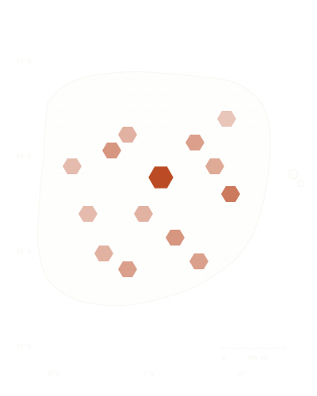

Where does Spain actually live?
Population density per H3 cell, cross-checked against night-lights.
This is the build page for P-01, the first project in Prospectra’s demographic trilogy. It’s published as the work happens. The code and figure below show the approach; the finished analysis and charts land on May 26.
The question
Spain’s population register, the INE Padrón Continuo, is published per municipality — and municipalities are wildly uneven in size. Madrid is one polygon; so is a 12-person hamlet in Soria. Ask “where do people actually live?” with that data and the map lies: it tells you about administrative borders, not density.
The fix is to throw away the borders and bin everyone into a regular grid — Uber’s H3 hexagons — then sanity-check the result against an independent signal: how brightly each cell glows at night.
The data
| Layer | Source | Resolution |
|---|---|---|
| Population | INE Padrón Continuo | Municipal polygon |
| Spatial index | Uber H3 | res-9 (~0.1 km²) |
| Validation | NASA Black Marble (VIIRS) | ~500 m raster |
Approach
- Bin municipal population into H3 res-9 cells (area-weighted).
- Aggregate night-time radiance per cell from the Black Marble raster.
- Compare the two surfaces — where they disagree is where the register and reality part ways.
1 · Binning population to H3
On Databricks, with Apache Sedona for the spatial join and the built-in h3_* SQL functions for indexing — no GIS server, just the lakehouse:
# Databricks · PySpark + Apache Sedona
from sedona.spark import SedonaContext
sedona = SedonaContext.create(spark)
# municipal polygons (INE) → H3 res-9 cells covering each one
cells = (
spark.table("ine.padron_municipal")
.selectExpr(
"muni_code",
"poblacion",
"explode(h3_polyfill(geom, 9)) AS h3") # one row per covered cell
)
# split each municipality's population across its cells, weighted by area
pop_per_cell = (
cells.withColumn("cell_pop", col("poblacion") * col("area_share"))
.groupBy("h3")
.agg(sum("cell_pop").alias("population"))
)2 · Cross-checking against night-lights
Zonal statistics straight in Databricks SQL — average VIIRS radiance per H3 cell:
SELECT h3_cell,
AVG(radiance) AS mean_radiance
FROM black_marble.viirs_2024
GROUP BY h3_cellThe grid, over Iberia

Illustrative H3 coverage over the Iberian peninsula. The final population choropleth and the night-lights agreement map ship May 26.
What ships May 26
- The full notebook (population binning + raster zonal stats), reproducible on Databricks Free Edition.
- Two maps: the H3 population surface, and where it agrees / disagrees with night-lights.
- A written piece, plus an X thread walking through the result.